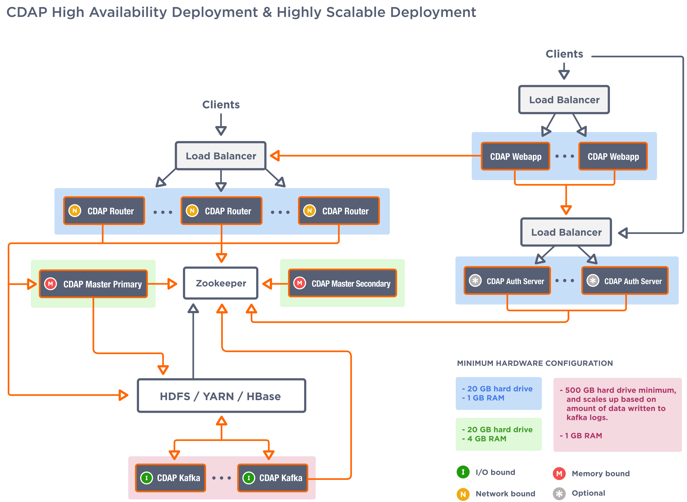

Installation and Configuration¶
Introduction¶
This manual is to help you install and configure Cask Data Application Platform (CDAP). It provides the system, network, and software requirements, packaging options, and instructions for installation and verification of the CDAP components so they work with your existing Hadoop cluster. There are specific instructions for upgrading existing CDAP installations.
These are the CDAP components:
- CDAP Webapp: User interface—the Console—for managing CDAP applications;
- CDAP Router: Service supporting REST endpoints for CDAP;
- CDAP Master: Service for managing runtime, lifecycle and resources of CDAP applications;
- CDAP Kafka: Metrics and logging transport service, using an embedded version of Kafka; and
- CDAP Authentication Server: Performs client authentication for CDAP when security is enabled.
Before installing the CDAP components, you must first install a Hadoop cluster with HDFS, YARN, HBase, and Zookeeper. In order to use the ad-hoc querying capabilities of CDAP, you will also need Hive. All CDAP components can be installed on the same boxes as your Hadoop cluster, or on separate boxes that can connect to the Hadoop services.
Our recommended installation is to use two boxes for the CDAP components; the hardware requirements are relatively modest, as most of the work is done by the Hadoop cluster. These two boxes provide high availability; at any one time, one of them is the leader providing services while the other is a follower providing failover support.
Some CDAP components run on YARN, while others orchestrate “containers” in the Hadoop cluster. The CDAP Router service starts a router instance on each of the local boxes and instantiates one or more gateway instances on YARN as determined by the gateway service configuration.
We have specific hardware, network and prerequisite software requirements detailed below that need to be met and completed before installation of the CDAP components.
System Requirements¶
Hardware Requirements¶
Systems hosting the CDAP components must meet these hardware specifications, in addition to having CPUs with a minimum speed of 2 GHz:
| CDAP Component | Hardware Component | Specifications |
|---|---|---|
| CDAP Webapp | RAM | 1 GB minimum, 2 GB recommended |
| CDAP Router | RAM | 2 GB minimum, 4 GB recommended |
| CDAP Master | RAM | 2 GB minimum, 4 GB recommended |
| CDAP Kafka | RAM | 1 GB minimum, 2 GB recommended |
| Disk Space | CDAP Kafka maintains a data cache in a configurable data directory. Required space depends on the number of CDAP applications deployed and running in the CDAP and the quantity of logs and metrics that they generate. | |
| CDAP Authentication Server | RAM | 1 GB minimum, 2 GB recommended |
Network Requirements¶
CDAP components communicate over your network with HBase, HDFS, and YARN. For the best performance, CDAP components should be located on the same LAN, ideally running at 1 Gbps or faster. A good rule of thumb is to treat CDAP components as you would Hadoop DataNodes.
Software Prerequisites¶
You’ll need this software installed:
- Java runtime (on CDAP and Hadoop nodes)
- Node.js runtime (on CDAP nodes)
- Hadoop and HBase (and optionally Hive) environment to run against
- CDAP nodes require Hadoop and HBase client installation and configuration. Note: No Hadoop services need to be running.
Java Runtime¶
The latest JDK or JRE version 1.6.xx or 1.7.xx for Linux and Solaris must be installed in your environment.
To check the Java version installed, run the command:
java -version
CDAP is tested with the Oracle JDKs; it may work with other JDKs such as Open JDK, but it has not been tested with them.
Once you have installed the JDK, you’ll need to set the JAVA_HOME environment variable.
Node.js Runtime¶
You can download the latest version of Node.js from nodejs.org:
- Download the appropriate Linux or Solaris binary .tar.gz from nodejs.org/download/.
- Extract somewhere such as /opt/node-[version]/
- Build node.js; instructions that may assist are available at github
- Ensure that nodejs is in the $PATH. One method is to use a symlink from the installation: ln -s /opt/node-[version]/bin/node /usr/bin/node
Hadoop/HBase Environment¶
For a distributed enterprise, you must install these Hadoop components:
| Component | Distribution | Required Version |
|---|---|---|
| HDFS | Apache Hadoop DFS | 2.0.2-alpha or later |
| CDH or HDP | (CDH) 4.2.x or later or (HDP) 2.0 or later | |
| YARN | Apache Hadoop DFS | 2.0.2-alpha or later |
| CDH or HDP | (CDH) 4.2.x or later or (HDP) 2.0 or later | |
| HBase | 0.94.2+, 0.96.0+, 0.98.0+ | |
| Zookeeper | Version 3.4.3 or later | |
| Hive | Version 12.0 or later | |
| CDH or HDP | (CDH) 4.3.x or later or (HDP) 2.0 or later |
Note: Certain CDAP components need to reference your Hadoop, HBase, YARN (and possibly Hive) cluster configurations by adding your configuration to their class paths.
Deployment Architectures¶
CDAP Minimal Deployment
Note: Minimal deployment runs all the services on single host.

CDAP High Availability and Highly Scalable Deployment
Note: Each component in CDAP is horizontally scalable. This diagram presents the high availability and highly scalable deployment. The number of nodes for each component can be changed based on the requirements.
{kind=link}
Preparing the Cluster¶
To prepare your cluster so that CDAP can write to its default namespace, create a top-level /cdap directory in HDFS, owned by an HDFS user yarn:
sudo -u hdfs hadoop fs -mkdir /cdap && hadoop fs -chown yarn /cdap
In the CDAP packages, the default HDFS namespace is /cdap and the default HDFS user is yarn. If you set up your cluster as above, no further changes are required.
If your cluster is not setup with these defaults, you’ll need to edit your CDAP configuration once you have downloaded and installed the packages, and prior to starting services.
Packaging¶
CDAP components are available as either Yum .rpm or APT .deb packages. There is one package for each CDAP component, and each component may have multiple services. Additionally, there is a base CDAP package with three utility packages (for HBase compatibility) installed which creates the base configuration and the cdap user. We provide packages for Ubuntu 12 and CentOS 6.
Available packaging types:
- RPM: YUM repo
- Debian: APT repo
- Tar: For specialized installations only
Note: If you are using Chef to install CDAP, an official cookbook is available.
Preparing Package Managers¶
RPM using Yum¶
Download the Cask Yum repo definition file:
sudo curl -o /etc/yum.repos.d/cask.repo http://repository.cask.co/downloads/centos/6/x86_64/cask.repo
This will create the file /etc/yum.repos.d/cask.repo with:
[cask]
name=Cask Packages
baseurl=http://repository.cask.co/centos/6/x86_64/releases
enabled=1
gpgcheck=1
Add the Cask Public GPG Key to your repository:
sudo rpm --import http://repository.cask.co/centos/6/x86_64/releases/pubkey.gpg
Debian using APT¶
Download the Cask Apt repo definition file:
sudo curl -o /etc/apt/sources.list.d/cask.list http://repository.cask.co/downloads/ubuntu/precise/amd64/cask.list
This will create the file /etc/apt/sources.list.d/cask.list with:
deb [ arch=amd64 ] http://repository.cask.co/ubuntu/precise/amd64/releases precise releases
Add the Cask Public GPG Key to your repository:
curl -s http://repository.cask.co/ubuntu/precise/amd64/releases/pubkey.gpg | sudo apt-key add -
Installation¶
Install the CDAP packages by using one of these methods:
Using Chef:
If you are using Chef to install CDAP, an official cookbook is available.
Using Yum:
sudo yum install cdap-gateway cdap-kafka cdap-master cdap-security cdap-web-app
Using APT:
sudo apt-get update
sudo apt-get install cdap-gateway cdap-kafka cdap-master cdap-security cdap-web-app
Do this on each of the boxes that are being used for the CDAP components; our recommended installation is a minimum of two boxes.
This will download and install the latest version of CDAP with all of its dependencies.
Configuration¶
CDAP packages utilize a central configuration, stored by default in /etc/cdap.
When you install the CDAP base package, a default configuration is placed in /etc/cdap/conf.dist. The cdap-site.xml file is a placeholder where you can define your specific configuration for all CDAP components. The cdap-site.xml.example file shows the properties that usually require customization for all installations.
Similar to Hadoop, CDAP utilizes the alternatives framework to allow you to easily switch between multiple configurations. The alternatives system is used for ease of management and allows you to to choose between different directories to fulfill the same purpose.
Simply copy the contents of /etc/cdap/conf.dist into a directory of your choice (such as /etc/cdap/conf.mycdap) and make all of your customizations there. Then run the alternatives command to point the /etc/cdap/conf symlink to your custom directory.
Configure the cdap-site.xml after you have installed the CDAP packages.
To configure your particular installation, follow one of these two approaches:
Modify cdap-site.xml, using cdap-site.example as a model to follow.
To make alterations to your configuration, create (or edit if existing) an .xml file conf/cdap-site.xml (see the Appendix: cdap-site.xml) and set appropriate properties.
Add these properties to cdap-site.xml; they are the minimal required configuration:
<configuration> <!-- Cluster configurations --> <property> <name>root.namespace</name> <value>cdap</value> <description>Specifies the root namespace</description> </property> <!-- Substitute the zookeeper quorum for components here --> <property> <name>zookeeper.quorum</name> <value>FQDN1:2181,FQDN2:2181/${root.namespace}</value> <description>Specifies the zookeeper host:port</description> </property> <property> <name>hdfs.namespace</name> <value>/${root.namespace}</value> <description>Namespace for HDFS files</description> </property> <property> <name>hdfs.user</name> <value>yarn</value> <description>User name for accessing HDFS</description> </property> <!-- Router configuration --> <!-- Substitue the IP to which Router service should bind to and listen on --> <property> <name>router.bind.address</name> <value>LOCAL-ROUTER-IP</value> <description>Specifies the inet address on which the Router service will listen</description> </property> <!-- App Fabric configuration --> <!-- Substitute the IP to which App-Fabric service should bind to and listen on --> <property> <name>app.bind.address</name> <value>LOCAL-APP-FABRIC-IP</value> <description>Specifies the inet address on which the app fabric service will listen</description> </property> <!-- Data Fabric configuration --> <!-- Substitute the IP to which Data-Fabric tx service should bind to and listen on --> <property> <name>data.tx.bind.address</name> <value>LOCAL-DATA-FABRIC-IP</value> <description>Specifies the inet address on which the transaction service will listen</description> </property> <!-- Kafka Configuration --> <property> <name>kafka.log.dir</name> <value>/data/cdap/kafka-logs</value> <description>Directory to store Kafka logs</description> </property> <!-- Substitute with a list of all machines which will run the Kafka component --> <property> <name>kafka.seed.brokers</name> <value>FQDN1:9092,FQDN2:9092</value> <description>List of Kafka brokers (comma separated)</description> </property> <!-- Must be <= the number of kafka.seed.brokers configured above. For HA this should be at least 2. --> <property> <name>kafka.default.replication.factor</name> <value>1</value> <description>Kafka replication factor</description> </property> <!-- Watchdog Configuration --> <!-- Substitute the IP to which metrics-query service should bind to and listen on --> <property> <name>metrics.query.bind.address</name> <value>LOCAL-WATCHDOG-IP</value> <description>Specifies the inet address on which the metrics-query service will listen</description> </property> <!-- Web-App Configuration --> <property> <name>dashboard.bind.port</name> <value>9999</value> <description>Specifies the port on which dashboard listens</description> </property> <!-- Substitute the IP of the Router service to which the UI should connect --> <property> <name>router.server.address</name> <value>ROUTER-HOST-IP</value> <description>Specifies the destination IP where Router service is running</description> </property> <property> <name>router.server.port</name> <value>10000</value> <description>Specifies the destination Port where Router service is listening</description> </property> </configuration>
Depending on your installation, you may want to set these properties:
If you want to use an HDFS directory with a name other than /cdap:
Create the HDFS directory you want to use, such as /myhadoop/myspace.
Create an hdfs.namespace property for the HDFS directory in conf/cdap-site.xml:
<property> <name>hdfs.namespace</name> <value>/myhadoop/myspace</value> <description>Default HDFS namespace</description> </property>
Ensure that the default HDFS user yarn owns that HDFS directory.
If you want to use a different HDFS user than yarn:
Check that there is—and create if necessary—a corresponding user on all machines in the cluster on which YARN is running (typically, all of the machines).
Create an hdfs.user property for that user in conf/cdap-site.xml:
<property> <name>hdfs.user</name> <value>my_username</value> <description>User for accessing HDFS</description> </property>
Check that the HDFS user owns the HDFS directory described by hdfs.namespace on all machines.
Set the router.server.address property in conf/cdap-site.xml to the hostname of the CDAP Router. The CDAP Console uses this property to connect to the Router:
<property> <name>router.server.address</name> <value>{router-host-name}</value> </property>
To use the ad-hoc querying capabilities of CDAP, enable the CDAP Explore Service in conf/cdap-site.xml (by default, it is disabled):
<property> <name>cdap.explore.enabled</name> <value>true</value> <description>Enable Explore functionality</description> </property>
Note: This feature cannot be used unless the cluster has a correct version of Hive installed. See Hadoop/HBase Environment. This feature is currently not supported on secure Hadoop clusters.
Secure Hadoop¶
When running CDAP on top of Secure Hadoop and HBase (using Kerberos authentication), the CDAP Master process will need to obtain Kerberos credentials in order to authenticate with Hadoop and HBase. In this case, the setting for hdfs.user in cdap-site.xml will be ignored and the CDAP Master process will be identified as the Kerberos principal it is authenticated as.
In order to configure CDAP Master for Kerberos authentication:
Create a Kerberos principal for the user running CDAP Master.
Install the k5start package on the servers where CDAP Master is installed. This is used to obtain Kerberos credentials for CDAP Master on startup.
Generate a keytab file for the CDAP Master Kerberos principal and place the file in /etc/security/keytabs/cdap.keytab on all the CDAP Master hosts. The file should be readable only by the user running the CDAP Master process.
Edit /etc/default/cdap-master, substituting the Kerberos principal for <cdap-principal>:
CDAP_KEYTAB="/etc/security/keytabs/cdap.keytab" CDAP_PRINCIPAL="<cdap-principal>@EXAMPLE.REALM.COM"
When CDAP Master is started via the init script, it will now start using k5start, which will first login using the configured keytab file and principal.
ULIMIT Configuration¶
When you install the CDAP packages, the ulimit settings for the CDAP user are specified in the /etc/security/limits.d/cdap.conf file. On Ubuntu, they won’t take effect unless you make changes to the /etc/pam.d/common-session file. You can check this setting with the command ulimit -n when logged in as the CDAP user. For more information, refer to the ulimit discussion in the Apache HBase Reference Guide.
Writing to Temp Files¶
There are two temp directories utilized by CDAP (both specified in Appendix: cdap-site.xml):
- app.temp.dir (default: /tmp)
- kafka.log.dir (default: /tmp/kafka-logs)
The CDAP user should be able to write to both of these directories, as they are used for deploying applications and operating CDAP.
Configuring Security¶
For instructions on enabling CDAP Security, see CDAP Security; and in particular, see the instructions for configuring the properties of cdap-site.xml.
Starting Services¶
When all the packages and dependencies have been installed, and the configuration parameters set, you can start the services on each of the CDAP boxes by running the command:
for i in `ls /etc/init.d/ | grep cdap` ; do sudo service $i restart ; done
When all the services have completed starting, the CDAP Console should then be accessible through a browser at port 9999.
The URL will be http://<host>:9999 where <host> is the IP address of one of the machines where you installed the packages and started the services.
Making CDAP Highly-available¶
Repeat these steps on additional boxes. The configurations needed to support high-availability are:
- kafka.seed.brokers: 127.0.0.1:9092,...
- Kafka brokers list (comma separated)
- kafka.default.replication.factor: 2
- Used to replicate Kafka messages across multiple machines to prevent data loss in the event of a hardware failure.
- The recommended setting is to run at least two Kafka servers.
- Set this to the number of Kafka servers.
Getting a Health Check¶
Administrators can check the health of various services in the system. (In these examples, substitute for <host> the host name or IP address of the CDAP server.)
To retrieve the health check of the CDAP Console, make a GET request to the URI:
http://<host>:9999/statusTo retrieve the health check of the CDAP Router, make a GET request to the URI:
http://<host>:10000/statusTo retrieve the health check of the CDAP Authentication Server, make a GET request to the URI:
http://<host>:10009/status
On success, the calls return a valid HTTP response with a 200 code.
To retrieve the health check of all the services running in YARN, make a GET request to the URI:
http://<host>:10000/v2/system/servicesOn success, the call returns a JSON string with component names and their corresponding statuses.
Verification¶
To verify that the CDAP software is successfully installed and you are able to use your Hadoop cluster, run an example application. We provide in our SDK pre-built .JAR files for convenience.
- Download and install the latest CDAP Software Development Kit (SDK).
- Extract to a folder (CDAP_HOME).
- Open a command prompt and navigate to CDAP_HOME/examples.
- Each example folder has a .jar file in its target directory. For verification, we will use the WordCount example.
- Open a web browser to the CDAP Console. It is located on port 9999 of the box where you installed CDAP.
- On the Console, click the button Load an App.
- Find the pre-built WordCount-<cdap-version>.jar using the dialog box to navigate to CDAP_HOME/examples/WordCount/target/, substituting your version for <cdap-version>.
- Once the application is deployed, instructions on running the example can be found at the WordCount example.
- You should be able to start the application, inject sentences, and retrieve results.
- When finished, you can stop and remove the application as described in the section on Building and Running CDAP Applications.
Upgrading an Existing Version¶
When upgrading an existing CDAP installation from a previous version, you will need to make sure the CDAP table definitions in HBase are up-to-date.
These steps will stop CDAP, update the installation, run an upgrade tool for the table definitions, and then restart CDAP.
Stop all CDAP processes:
for i in `ls /etc/init.d/ | grep cdap` ; do sudo service $i stop ; doneUpdate the CDAP packages by running either of these methods:
Using Yum (on one line):
sudo yum install cdap cdap-gateway cdap-hbase-compat-0.94 cdap-hbase-compat-0.96 cdap-hbase-compat-0.98 cdap-kafka cdap-master cdap-security cdap-web-app
Using APT (on one line):
sudo apt-get install cdap cdap-gateway cdap-hbase-compat-0.94 cdap-hbase-compat-0.96 cdap-hbase-compat-0.98 cdap-kafka cdap-master cdap-security cdap-web-app
Run the upgrade tool:
/opt/cdap/master/bin/svc-master run co.cask.cdap.data.tools.Main upgradeRestart the CDAP processes:
for i in `ls /etc/init.d/ | grep cdap` ; do sudo service $i start ; done